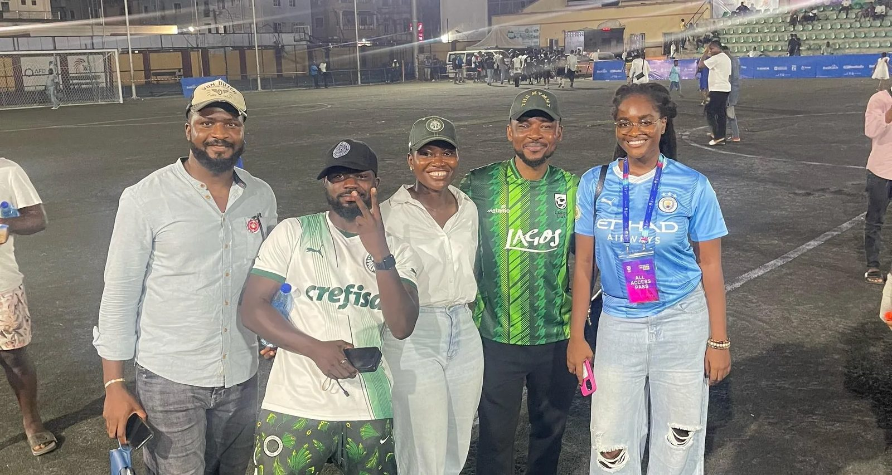

Projects
Turning Lagos Liga into a content business
Five platforms for one of Africa's largest recreational football leagues, and a brand people kept talking about between matches.

What was going on
Lagos Liga is one of Africa's largest private recreational football leagues: non-professional players, ex-players and fans competing for serious prizes. The league had real energy on the pitch, but very little of it reached the internet.
The challenge
Great matches, quiet channels. The league needed a reason for people to care on the days there was no football.
What I did
- Took over Instagram, Facebook, TikTok, YouTube and X at once, plus live coverage of events.
- Worked out what made Lagos Liga different from every other league, and kept saying it.
- Put everyone in the spotlight: club owners, coaches, players, partners and vendors. When people feel seen, they share.
- Treated the league as a content business that stays interesting between game days.
What changed
It also trended on X organically, with no paid push.
What I took from it
The fastest growth didn't come from better content alone. It came from making every person in the league feel important.
In their words
“I knew you were good at your stuff, but I saw how that competence got matched with personality, character and street depth. I don't think I ever want to do any venture without going with you.”
Next case study
TechUnwind Fest →